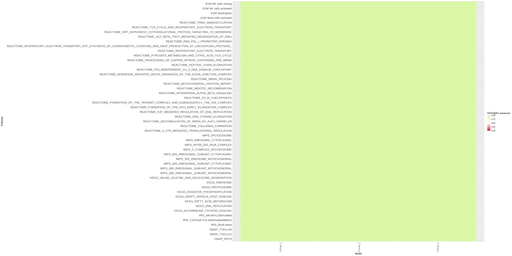
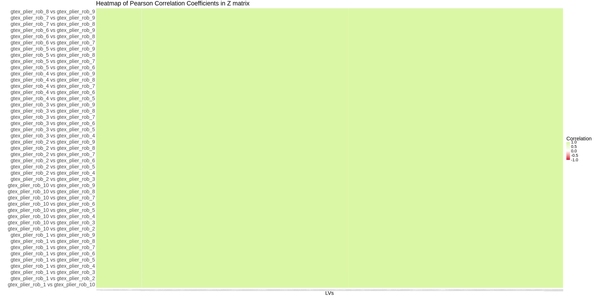
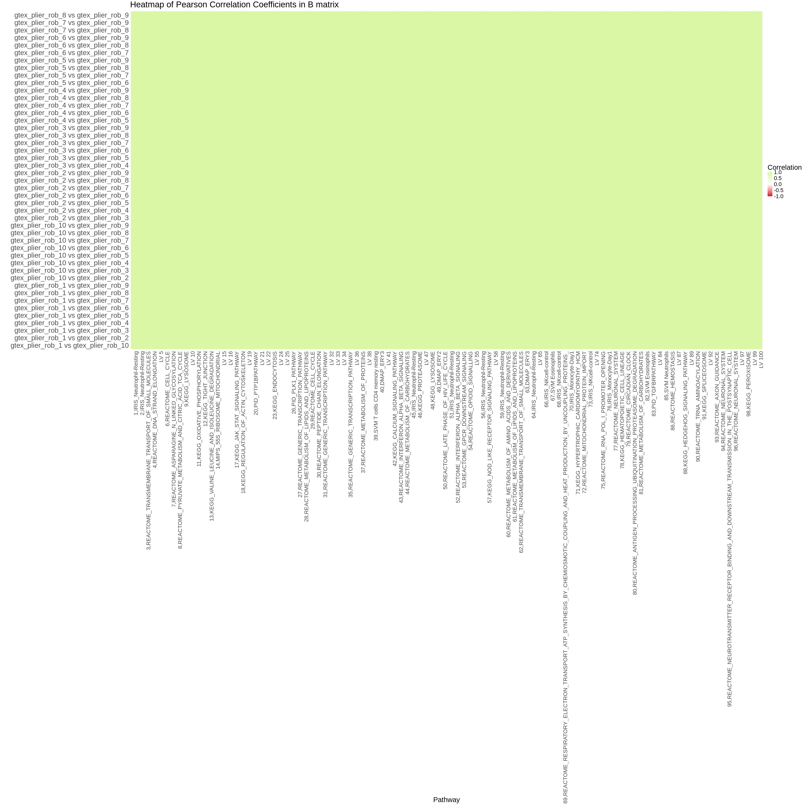
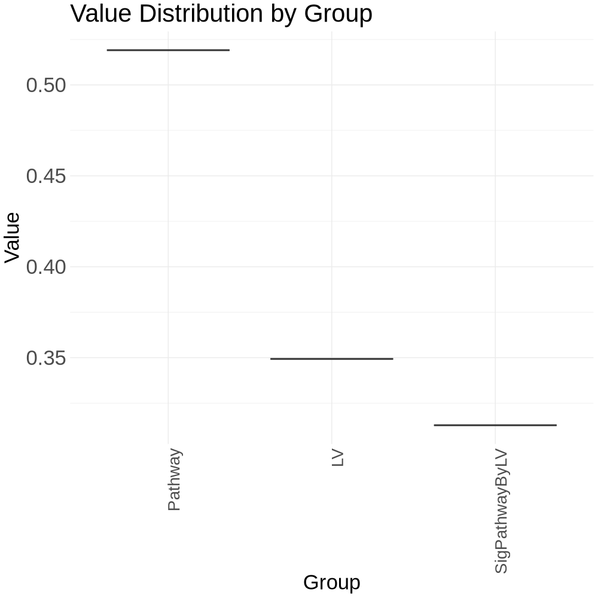

INPUT_PLIER_ROB_DIR=NULLAnalysis robustness of PLIER models based on GTEx
Analysis robustness of PLIER models based on GTEx
Compare the various parameters of PLIER GTEx models across different computations to evaluate PLIER’s robustness, utilizing identical parameters for assessment.
# Parameters
INPUT_PLIER_ROB_DIR = "output/gtex/robustness"Load libraries and data
suppressPackageStartupMessages({
library(dplyr)
library(tidyr)
library(UpSetR)
library(ggplot2)
library(ComplexHeatmap)
library(reshape2)
library(corrr)
})
#load functions
source(here::here('scripts/plier_util.R'))
# move functions to a Rscript?
check_all_equal_in_list <- function(lst) {
# Check if all values in the list are equal
all_equal <- all(sapply(lst, function(x) identical(x, lst[[1]])))
# Print message based on the result
if (all_equal) {
print("All values in the list are equal.")
} else {
print("Values in the list are not all equal.")
}
}
jaccard_index <- function(a, b) {
intersection = length(intersect(a, b))
union = length(a) + length(b) - intersection
return (intersection/union)
}
return_dim_check=function(matrix_M_list){
dimensions_list <- lapply(matrix_M_list, function(df) {
return(dim(df))
})
# Check if all data frames have the same number of rows and columns
all_same_dimensions <- all(sapply(dimensions_list, function(x) all(x == dimensions_list[[1]])))
# Print the result
if (all_same_dimensions) {
print("All data frames have the same number of rows and columns.")
} else {
print("Not all data frames have the same number of rows and columns.")
}
}
calculate_pearson_matrices=function(matrix_M_list){
# Calculate Pearson correlations for each pair of matrices
correlation_results <- list()
# Iterate over all unique pairs of matrices
for (i in 1:(length(matrix_M_list) - 1)) {
for (j in (i + 1):length(matrix_M_list)) {
# Initialize a vector to store correlations for this pair
correlations <- c()
# Ensure both matrices have the same columns
common_c <- intersect(names(matrix_M_list[[i]]), names(matrix_M_list[[j]]))
# Calculate correlations for each common colums
for (c in common_c) {
correlations[c] <- cor(matrix_M_list[[i]][[c]], matrix_M_list[[j]][[c]], method = "pearson")
}
# Store the correlations with a named key indicating the pair
comparison_name <- paste(names(matrix_M_list)[i], "vs", names(matrix_M_list)[j])
correlation_results[[comparison_name]] <- correlations
}
}
# Initialize an empty dataframe for heatmap data
heatmap_data <- data.frame()
# Loop through each comparison result to build the dataframe
for (comparison_name in names(correlation_results)) {
temp_df <- data.frame(t(correlation_results[[comparison_name]]))
colnames(temp_df) <- names(correlation_results[[comparison_name]])
temp_df$Comparison <- comparison_name
# Bind this comparison's results to the heatmap data
heatmap_data <- rbind(heatmap_data, temp_df)
}
# Reorder dataframe to have Comparison as the first column
heatmap_data <- heatmap_data[, c(ncol(heatmap_data), 1:(ncol(heatmap_data)-1))]
}Robustness analysis
Extract all the parameters in the PLIER module for each GTEx module and create a list for each parameter and load models into a list object.
gtex_rob_model_paths=list.files(INPUT_PLIER_ROB_DIR,
pattern="\\.rds",
full.names=TRUE)
gtex_rob_model_paths=gtex_rob_model_paths[1:3]
parameters_to_keep <- c("L1", "L2", "L3", "B", "C", "heldOutGen", "residual", "summary", "U", "Uauc", "Z", "Up", "withPrior")
# Initialize a list to store the extracted values for each parameter, considering their data types
extracted_values <- setNames(lapply(parameters_to_keep, function(x) list()), parameters_to_keep)
# Function to handle different types of data structures
handle_data_type <- function(data, param) {
# Depending on the specific requirements or handling you need for each type, adjust here
return(data[[param]])
}
# Read each file once and extract all specified parameters, handling them based on their type
all_models_data <- lapply(gtex_rob_model_paths, function(file_path) {
plier_model <- readRDS(file_path)
# Extract and handle each needed parameter for this model
needed_params <- sapply(parameters_to_keep, function(param) handle_data_type(plier_model, param), simplify = FALSE)
names(needed_params) <- parameters_to_keep
return(needed_params)
})
# Organize the extracted data by parameter
for(param in parameters_to_keep) {
extracted_values[[param]] <- lapply(all_models_data, function(model_data) model_data[[param]])
}
gtex_rob_model_paths=list.files(INPUT_PLIER_ROB_DIR,
pattern="\\.rds",
full.names=TRUE)
# All models into a list
gtex_rob_models=lapply(gtex_rob_model_paths, readRDS)Are the L1, L2 and L3 parameters identical along the different GTEx models run?
L1
extracted_values$L1
check_all_equal_in_list(extracted_values$L1) - 27.7699846221656
- 27.7699846221656
- 27.7699846221656
[1] "All values in the list are equal."L2
extracted_values$L2
check_all_equal_in_list(extracted_values$L2) - 55.5399692443312
- 55.5399692443312
- 55.5399692443312
[1] "All values in the list are equal."L3
extracted_values$L3
check_all_equal_in_list(extracted_values$L3) - 0.00103329763864764
- 0.00103329763864764
- 0.00103329763864764
[1] "All values in the list are equal."Are the top pathways (FDR < 0.01, AUC > 0.95) present in all the models?
options(repr.plot.width = 40, repr.plot.height = 20, repr.plot.res = 100)
filtered_summaries <- lapply(extracted_values$summary, function(df) {
df %>%
filter(FDR < 0.01, AUC > 0.95)
})
combined <- bind_rows(filtered_summaries, .id = "model") %>%
select(model, pathway) %>%
distinct() %>%
mutate(presence = 1) %>%
pivot_wider(names_from = model, values_from = presence, values_fill = list(presence = 0))
mat_combined=combined
mat_combined$pathway=NULL
colnames(mat_combined)=paste0('GTExM_', 1:ncol(mat_combined))
mat_combined=as.matrix(mat_combined)
rownames(mat_combined)=combined$pathway
# Convert matrix to dataframe
mat_df <- as.data.frame(mat_combined)
mat_df$pathway <- rownames(mat_df)
# Melt the data for ggplot2
melted_mat <- melt(mat_df, id.vars = "pathway")
# Plot heatmap using ggplot2
ggplot(melted_mat, aes(x = variable, y = pathway, fill = value)) +
geom_tile(color = "white") +
scale_fill_gradient2(low = "#C70039", high = "#DAF7A6", mid = "white", midpoint = 0.5, limit = c(0, 1), space = "Lab", name = "PATHWAY presence") +
labs(x = "Model", y = "Pathway", fill = "PATHWAY presence") +
theme(
axis.text.x = element_text(size = 12, angle = 90, hjust = 1),
axis.text.y = element_text(size = 16),
text = element_text(size = 14)
)
How are the correlations of Z matrix along the different models?
# Load all the RDS files, extract the head of the Z element, and save into a named list
matrixZ_M_list <- lapply(seq_along(gtex_rob_model_paths), function(i) {
# Load the RDS file
tmp_gtex <- readRDS(gtex_rob_model_paths[i])
# Extract the first few elements of the Z column
head_Z <- head(tmp_gtex$Z, 100)
# Return as a data frame
return(data.frame(head_Z))
})
# Naming the list elements according to the filenames in gtex_rob_model_paths
names(matrixZ_M_list) <- paste0("matrixZ_M", seq_along(gtex_rob_model_paths))
# If you need the names to reflect the original filenames more closely, you could do:
names(matrixZ_M_list) <- sapply(strsplit(basename(gtex_rob_model_paths), "\\."), `[`, 1)
matrixZ_M_list <- lapply(matrixZ_M_list, function(df) {
# Generate new column names based on the number of columns
new_col_names <- paste0('LV_', 1:ncol(df))
# Assign the new names to the columns of the data frame
colnames(df) <- new_col_names
# Return the modified data frame
return(df)
})Do the present the same number of LVs and genes?
return_dim_check(matrixZ_M_list)[1] "All data frames have the same number of rows and columns."options(repr.plot.width = 40, repr.plot.height = 20, repr.plot.res = 100)
heatmap_data_lv=calculate_pearson_matrices(matrixZ_M_list)
ggplot(melt(heatmap_data_lv, id.vars = "Comparison"), aes(x = variable, y = Comparison, fill = value)) +
geom_tile() +
scale_fill_gradient2(low = "#C70039", high = "#DAF7A6", mid = "white", midpoint = 0, limit = c(-1, 1), space = "Lab", name = "Correlation") +
labs(title = "Heatmap of Pearson Correlation Coefficients in Z matrix", x = "LVs", y = "") +
theme_minimal() +
theme(
axis.text.x = element_text(size = 2, angle = 90, hjust = 1), # Rotate x-axis labels by 90 degrees
axis.text.y = element_text(size = 25), # Adjust y-axis text size
text = element_text(size = 25) # Adjust other text sizes (plot title, axis labels, etc.)
)
How are the correlations of B matrix along the different models?
# Load all the RDS files, extract the head of the Z element, and save into a named list
matrixB_M_list <- lapply(seq_along(gtex_rob_model_paths), function(i) {
# Load the RDS file
tmp_gtex <- readRDS(gtex_rob_model_paths[i])
# Extract the first few elements of the Z column
head_B <- head(tmp_gtex$B, 100)
# Return as a data frame
return(data.frame(head_B))
})
# Naming the list elements according to the filenames in gtex_rob_model_paths
names(matrixB_M_list) <- paste0("matrixB_M", seq_along(gtex_rob_model_paths))
# If you need the names to reflect the original filenames more closely, you could do:
names(matrixB_M_list) <- sapply(strsplit(basename(gtex_rob_model_paths), "\\."), `[`, 1)
matrixB_M_list <- lapply(matrixB_M_list, function(df) {
df=data.frame(t(df), check.names = FALSE)
# Return the modified data frame
return(df)
})Do the present the same number of PATHWAYS and samples?
return_dim_check(matrixB_M_list)[1] "All data frames have the same number of rows and columns."options(repr.plot.width = 40, repr.plot.height = 40, repr.plot.res = 100)
heatmap_data_pw=calculate_pearson_matrices(matrixB_M_list)
ggplot(melt(heatmap_data_pw, id.vars = "Comparison"), aes(x = variable, y = Comparison, fill = value)) +
geom_tile() +
scale_fill_gradient2(low = "#C70039", high = "#DAF7A6", mid = "white", midpoint = 0, limit = c(-1, 1), space = "Lab", name = "Correlation") +
labs(title = "Heatmap of Pearson Correlation Coefficients in B matrix", x = "Pathway", y = "") +
theme_minimal() +
theme(
axis.text.x = element_text(size = 20, angle = 90, hjust = 1), # Rotate x-axis labels by 90 degrees
axis.text.y = element_text(size = 25), # Adjust y-axis text size
text = element_text(size = 25) # Adjust other text sizes (plot title, axis labels, etc.)
)
How similar is the coverage in pathways and LVs assosiated with them?
Pathway: This represents the proportion of “covered” pathways within the analysis. A “covered” pathway refers to a pathway that has been identified.
LV (Latent Variable): This is about the proportion of LVs that have pathways associated with them. The proportion here indicates how many of these LVs have at least one associated pathway, suggesting a linkage or influence between the LVs and the pathways in question.
Sig. Pathway by LV: This metric calculates the number of pathways “covered” divided by the number of LVs. Essentially, it provides a ratio indicating the average number of pathways associated with each LV. A higher ratio suggests that, on average, each LV is associated with multiple pathways, which could indicate a more complex relationship between the LVs and the pathways, or possibly a higher degree of coverage and significance in the analysis.
options(repr.plot.width = 10, repr.plot.height = 10, repr.plot.res = 100)
gtex_rob_models_coverage=lapply(gtex_rob_models, GetPathwayCoverage)
pathways <- numeric(length(gtex_rob_models_coverage))
lvs <- numeric(length(gtex_rob_models_coverage))
sig_pathways_by_lv <- numeric(length(gtex_rob_models_coverage))
# Now we loop over the list and extract the values
for (i in seq_along(gtex_rob_models_coverage)) {
pathways[i] <- gtex_rob_models_coverage[[i]]$pathway
lvs[i] <- gtex_rob_models_coverage[[i]]$lv
sig_pathways_by_lv[i] <- gtex_rob_models_coverage[[i]]$sig.pathway.by.lv
}
gtex_df <- data.frame(
Index = seq_along(gtex_rob_models_coverage),
Pathway = pathways,
LV = lvs,
SigPathwayByLV = sig_pathways_by_lv
)
gtex_melted <- melt(gtex_df, id.vars = 'Index')
ggplot(gtex_melted, aes(x = variable, y = value)) +
geom_boxplot() +
labs(title = "Value Distribution by Group",
x = "Group",
y = "Value") +
theme_minimal() +
theme(
axis.text.x = element_text(size = 20, angle = 90, hjust = 1), # Rotate x-axis labels by 90 degrees
axis.text.y = element_text(size = 25), # Adjust y-axis text size
text = element_text(size = 25) # Adjust other text sizes (plot title, axis labels, etc.)
)